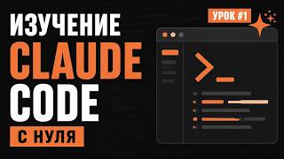
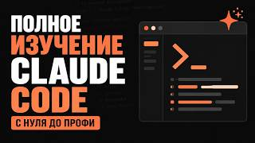

Дизайн интерфейсов
- Чем занимаешься
- Рисуешь красивые и удобные экраны сайтов и приложений в Figma.
- Как помогает Claude
- Разбирает твои макеты по скриншотам и учит принципам.
- Попробовать
- Перерисовать экран любимого приложения.
С любовью — для Лены
Лена, впереди маленькое путешествие, и ты пройдёшь его не одна. Сначала познакомишься с Claude — умным и очень терпеливым помощником. Потом вместе вы найдёте дело по душе, спокойно научитесь ему на практике и найдёте работу, которую можно делать из дома.
Для Claude есть особый навык-наставник, собранный специально для тебя. Ставишь его один раз, и Claude бережно ведёт тебя шаг за шагом: сам предлагает задания, объясняет простыми словами и помнит, где вы остановились. Ничего копировать и придумывать не нужно.
Никаких скучных курсов и спешки. Учишься в своём темпе, а Claude объясняет столько раз, сколько захочется.
Отмечай пройденные шаги — за каждый получаешь сердечки, и твой цветок растёт. Всё сохраняется на этом устройстве.
Глава 1 · 1–2 недели
В этой главе ты поставишь Claude, подключишь наставника и просто подружишься с ним. Никакой спешки: по одному маленькому шагу в день.
Claude — ИИ-помощник от компании Anthropic. Ему можно писать обычными словами, как подруге в мессенджере, а он ответит, объяснит и поможет сделать.
Иногда Claude ошибается, даже очень уверенно. Всё важное лучше перепроверить.
Россию и Беларусь Anthropic официально не обслуживает: их нет в списке стран. Как заходить, я тебе покажу. Если что-то не открывается, сразу пиши мне — разберёмся вместе.
Навык — это записка для Claude, в которой рассказано, кто ты, куда вы идёте и как бережно тебя учить. Ставится один раз, удобнее всего с компьютера.
Если какая-то кнопка называется чуть иначе, не переживай: сфотографируй экран и спроси Claude, куда нажать, или напиши мне. Подробно — в справке Anthropic про навыки.
Чат на сайте, в приложении и на телефоне, поиск в интернете, файлы, память, навыки, до 5 проектов.
Для начала этого хватит
Минимум в 5 раз больше сообщений, плюс Claude Code и больше моделей. При оплате за год — 17 $ в месяц.
Когда станешь учиться каждый день
В 5 или 20 раз больше, чем Pro.
Пока точно не нужен
Цены с claude.com/pricing на 26.10.2026. Если сообщения закончились, это не страшно: лимит обновляется каждые 5 часов. С оплатой помогу.
С ними поможет наставник — просто попроси, и он проведёт по шагам.
Наставник будет предлагать по одному шагу в день, минут на 20–40. Здесь просто отмечай, что уже получилось.
Ты общаешься с Claude каждый день, и тебе это нравится.
Глава 2 · 3–6 вечеров
Профессию не нужно выбирать по рекламе. Скажи наставнику «давай выбирать направление» — он мягко расспросит тебя о том, что тебе нравится, предложит три варианта и даст попробовать каждый.
Спрос и зарплаты всё время меняются, поэтому свежую картину рынка лучше спросить у наставника с включённым поиском.
Ты попробовала три направления, и одно тебе по-настоящему понравилось.
Глава 3 · 8–12 недель
Наставник составит мягкий учебный план и будет вести каждое занятие: коротко объяснит тему, даст задание, бережно проверит и задаст пару вопросов, чтобы всё уложилось.
Самое главное: пусть Claude делает вместе с тобой, а не вместо тебя. Наставник специально сначала даёт подсказку, а не готовый ответ, — так знания остаются с тобой.
В портфолио 3–5 законченных работ, и про каждую ты можешь рассказать сама.
Глава 4
Самое волнительное, но ты будешь готова. Наставник поможет с каждым шагом и поддержит, если что-то не сложится с первого раза.
Мечта
Первая удалённая работа или первый постоянный заказчик. Своё расписание, чай в любимой кружке и время на то, что тебе по-настоящему дорого.
И это только начало: Claude становится умнее с каждым обновлением, а вместе с ним растёшь и ты.
Смотри, когда захочется, и сразу пробуй у себя. Все ролики на русском, вышли в 2026 году и проверены 26.10.2026. Нажми на карточку — откроется YouTube.
 Как пользоваться Claude в 2026 — полный гайд для новичкаДмитрий Москаленко · 13 минПосмотреть первым
Как пользоваться Claude в 2026 — полный гайд для новичкаДмитрий Москаленко · 13 минПосмотреть первым
 Claude для новичков: почему он кажется сложным и с чего начатьBohomolov Lab · 28 минГлава 1
Claude: полный старт для новичка — регистрация, настройки, проектыСухов:Live · 44 минВо время настройки
Полный курс по Claude на 2026 год (от нуля до профи)Кайсар Курмангалиев · 50 минГлава 1
Claude для новичков: почему он кажется сложным и с чего начатьBohomolov Lab · 28 минГлава 1
Claude: полный старт для новичка — регистрация, настройки, проектыСухов:Live · 44 минВо время настройки
Полный курс по Claude на 2026 год (от нуля до профи)Кайсар Курмангалиев · 50 минГлава 1
 5 уровней владения Claude: на каком застрял ты?AI Прорыв · 24 минКонец главы 1
5 уровней владения Claude: на каком застрял ты?AI Прорыв · 24 минКонец главы 1
 Почему Claude AI — лучший?Droider · 32 минДля вдохновения
Почему Claude AI — лучший?Droider · 32 минДля вдохновения
 Claude: цифровой сотрудник, который умеет всёВизави · 18 минДля вдохновения
Claude: цифровой сотрудник, который умеет всёВизави · 18 минДля вдохновения
 Большой гайд по Claude: вот что я понял за 1000 часовНейропросвещение · 59 минЧерез месяц
Большой гайд по Claude: вот что я понял за 1000 часовНейропросвещение · 59 минЧерез месяц
 Полный курс Claude 2026 на 3 часа: Cowork, скиллы, субагентыНикита Велс · 2 ч 45 минКогда освоишься
Полный курс Claude 2026 на 3 часа: Cowork, скиллы, субагентыНикита Велс · 2 ч 45 минКогда освоишься

Claude Code с нуля, урок 1: что это и как пользоватьсяГоша Дударь · 7 мин, дальше серияГлава 3
Claude Code с нуля: полный курс в одном видеоШкола itProger · 1 ч 8 минГлава 3 Дай мне 20 минут, и ты получишь 10 000 часов знаний о Claude CodeАртём Воронков · 21 минГлава 3 Claude Code: полный курс для начинающих (2026)Никита Ефимов · 1 ч 13 минГлава 3Интерфейс Claude часто обновляется, поэтому в роликах кнопки могут выглядеть иначе. Платные курсы, которые советуют авторы, тебе не нужны. Про доступ из России в роликах советуют разное — с этим лучше сразу ко мне.
Самые полезные бесплатные уроки делает сама Anthropic в своей Академии. Они на английском: можно включить перевод страницы в браузере или попросить наставника пересказать урок по-русски.